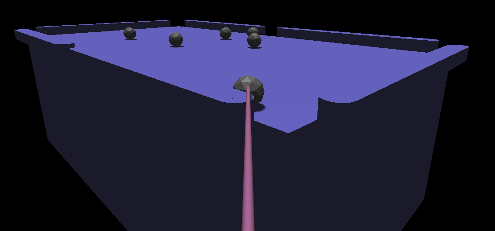
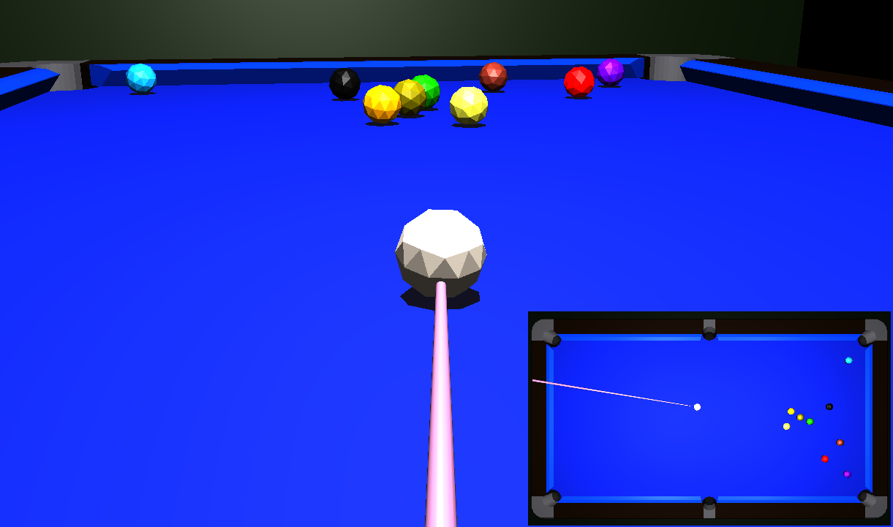
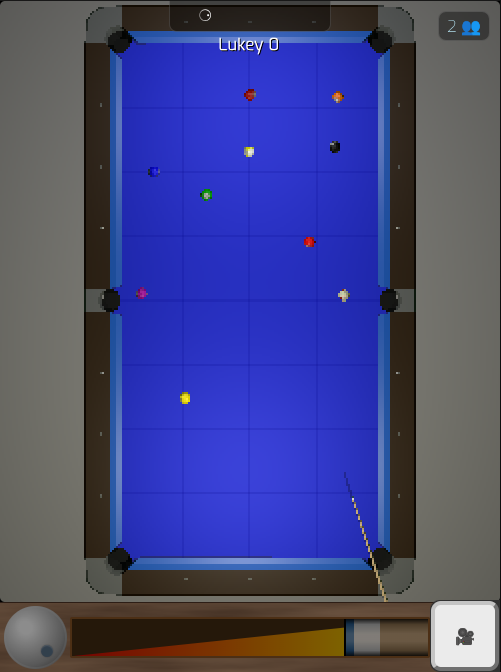
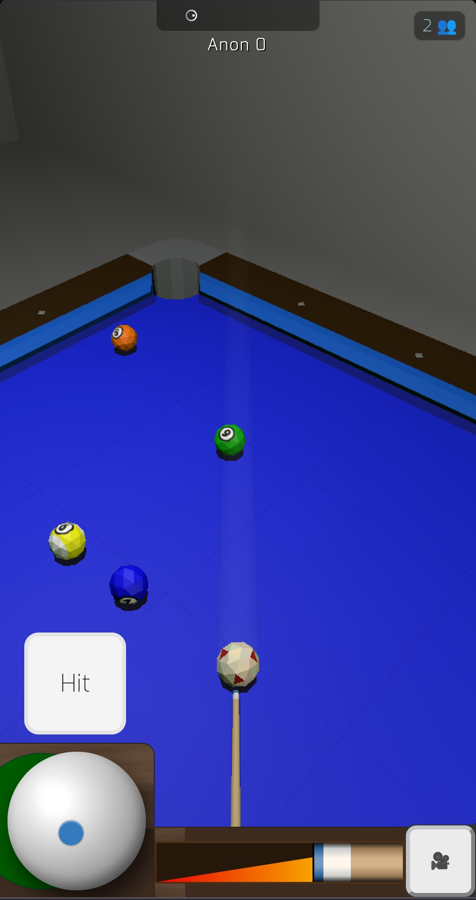
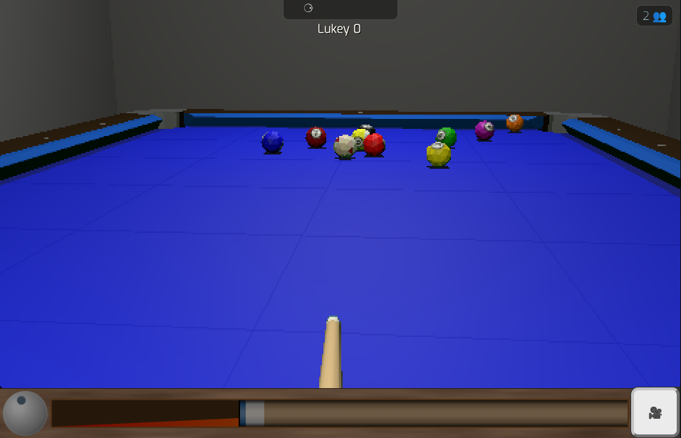
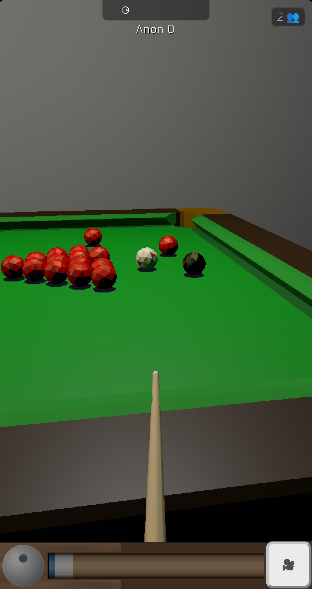
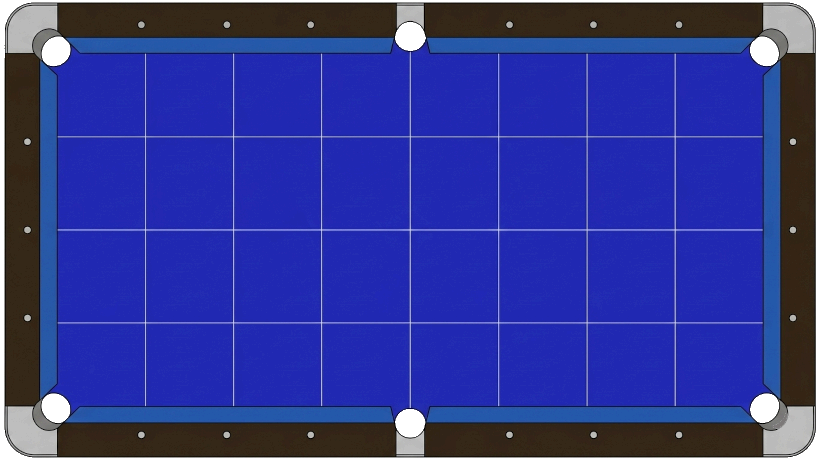
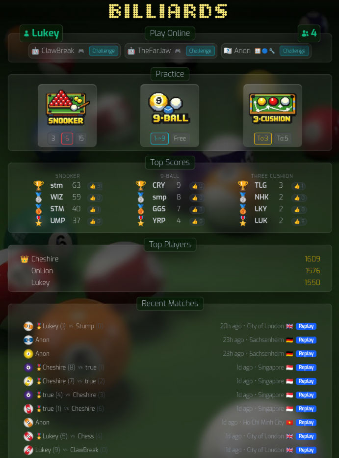
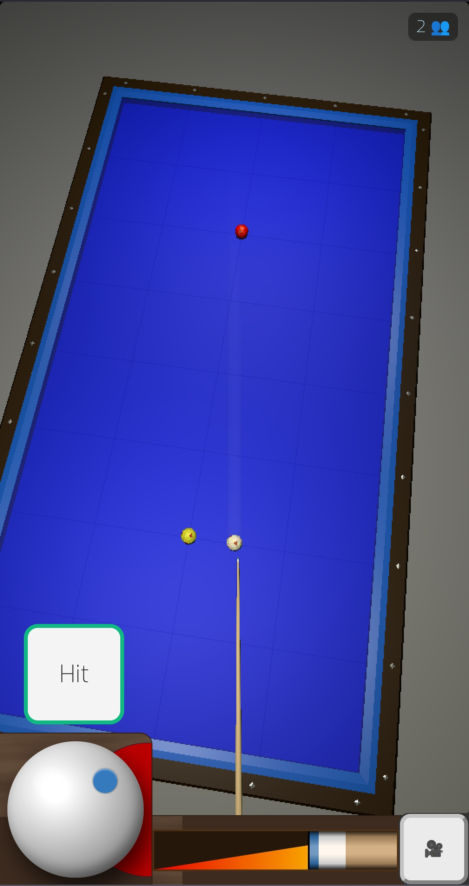

If you actually play pool or snooker, you've probably tried a browser game at some point and felt something was off within the first few shots. The cue ball comes off the cushion at the wrong angle. Backspin doesn't carry through the way it should. Side spin seems to do nothing, or too much, or something completely unpredictable.
It's not just aesthetics. It's the physics. And most games don't bother getting it right.
What most games get wrong
The shortcut most billiards games take is treating cushion bounces as simple angle reflections — angle in equals angle out, maybe with a bit of speed loss. That's fine for a game of Pong. It's not fine if you've ever played a real safety or tried to work the cue ball around the table.
Real cushions don't just redirect the ball. They interact with its spin. A ball with running side comes off shallower. A ball with check side kicks wider. Backspin changes the rebound angle in ways that aren't obvious until you've played enough to feel them. None of that happens in a reflection model.
Ball-to-ball collisions are similarly simplified in most games. Throw — the slight deflection caused by friction between balls at contact — gets ignored entirely. So does the way spin transfers between balls. The result is a game that looks like pool but doesn't play like it.

What's different here
This simulation is built on published physics research — specifically work on cushion dynamics and ball mechanics that models what actually happens at the contact point. The cushion bounce accounts for the ball's spin at the moment of impact, the height of the contact point above the table, and the friction between ball and cushion. It's a numerical model, not a lookup table.
The cushion model follows Mathavan et al. (2010), which works out the slip velocities at both the cushion contact point and the table contact point simultaneously during a bounce. The ball's velocity and spin update together through compression and restitution phases — so the cushion "knows" what spin the ball is carrying and responds accordingly. That's why running side shortens the rebound angle and check side widens it, the same way it does on a real table.


Ball collisions include throw. If you hit a ball with a bit of right-hand side, the object ball doesn't go exactly where the contact point says it should — it gets thrown slightly left. Real players account for this instinctively. It's the kind of thing that's invisible until it's missing.

Aiming and shot setup
The aiming system is designed to get out of the way. You set your line, adjust spin if you want it, and hit. The cue ball goes where the physics says it should go — not where a simplified model decided it should.


It works on mobile too. Touch controls let you aim and apply spin without needing a mouse.

Practice and multiplayer
There's a practice mode where you can set up specific layouts — scattered balls, clusters, line-ups — and work on particular shots. No pressure, just the table and the physics.

There's also a two-player online mode if you want to play against someone. The lobby is public.


Does it actually feel right?
That's genuinely subjective. The physics is grounded in real research and the numbers check out against published figures, but "feel" is something only a player can judge.
Someone who's spent time at a table will notice things a casual player won't — whether the cue ball comes back the right distance after a stun shot, or whether side spin does what it should off multiple cushions, as seen in this three-cushion demonstration.
The honest answer is: it feels more right than most. Whether it feels right to you is something you'd have to try for yourself.
Playable in the browser, no download, no account. Nine-ball, snooker, three-cushion, or practice mode.
Play now Practice Join lobby Leaderboard Source on GitHub